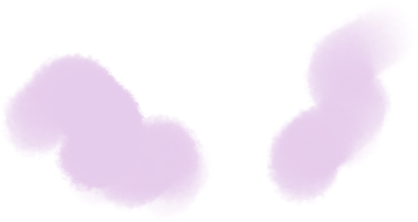

back
I was slipping away.
That's what it felt like.
← Click this pavilion.

Hello, my friend.
My name is Lily.
I died of brain cancer at 14.
From beyond, I watched my parents' world,
filled with their love and sorrow.
Let me share this unseen story with you.
continue